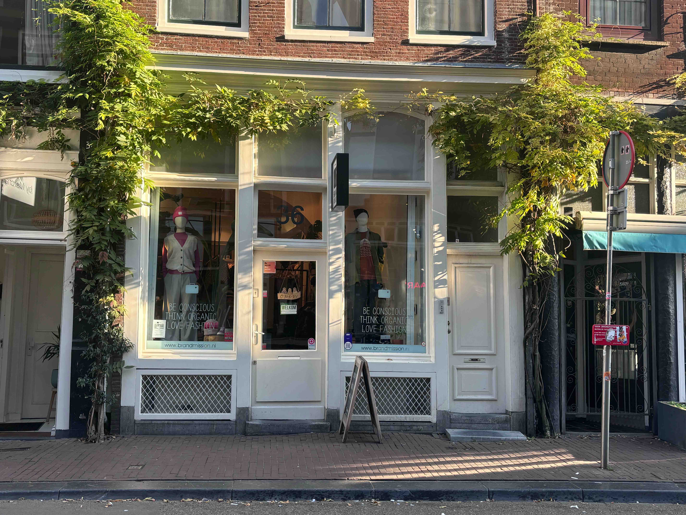
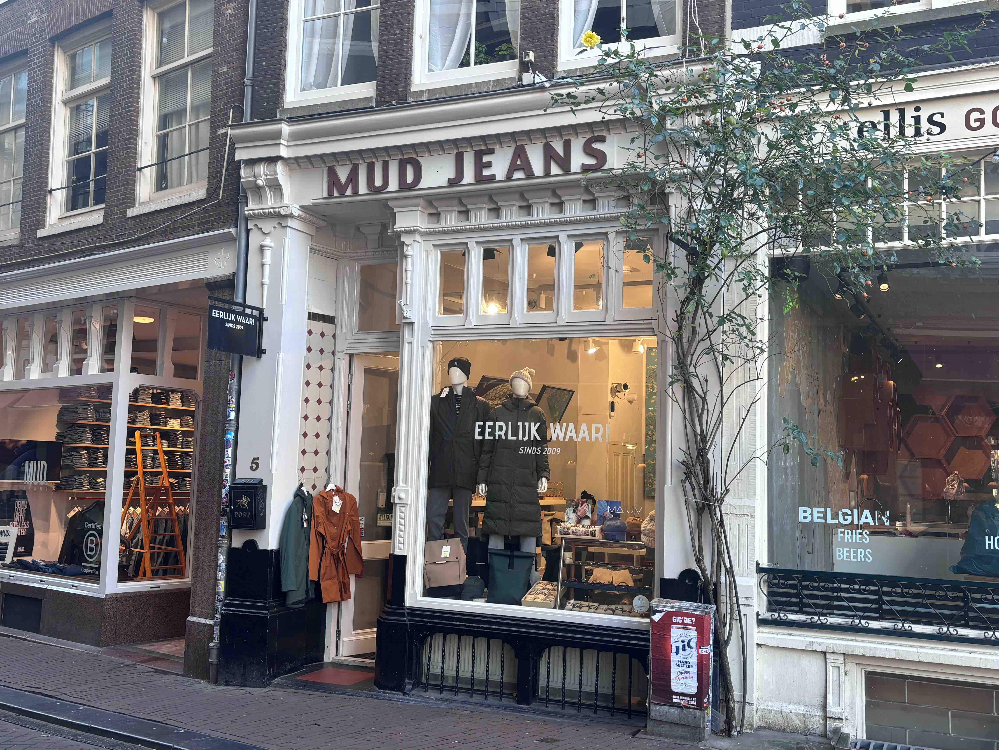
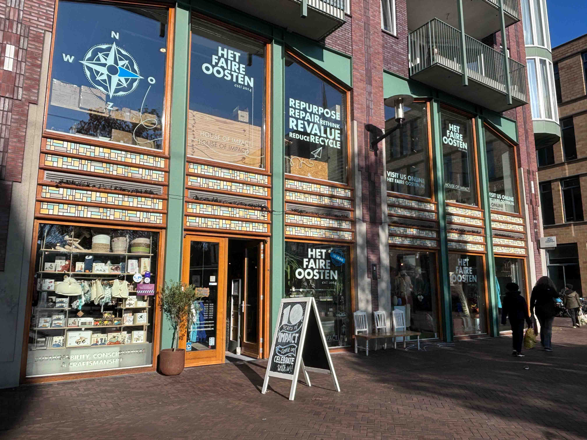
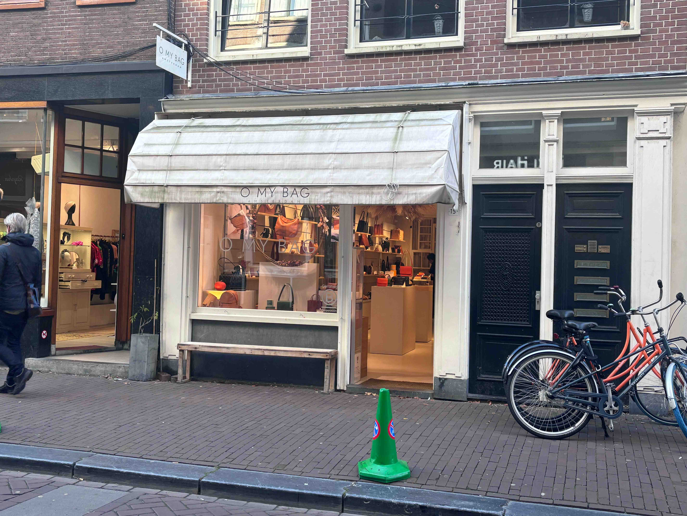
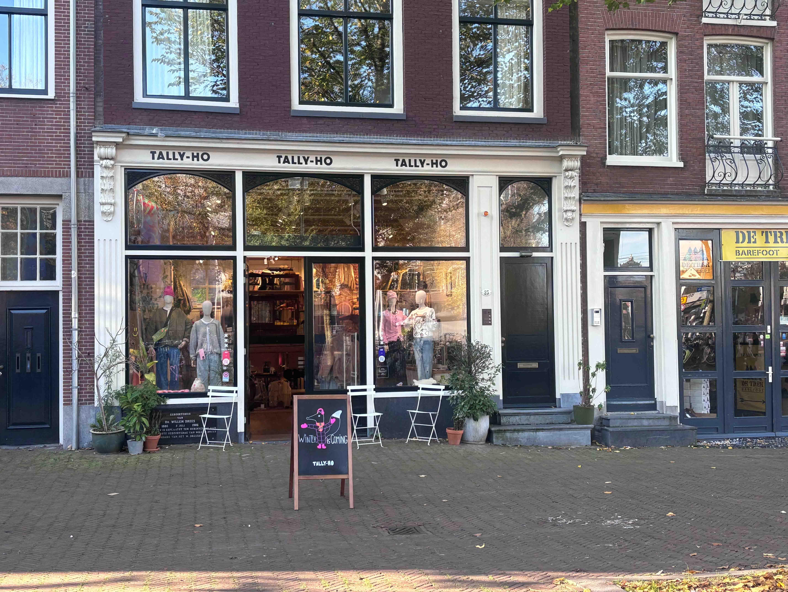
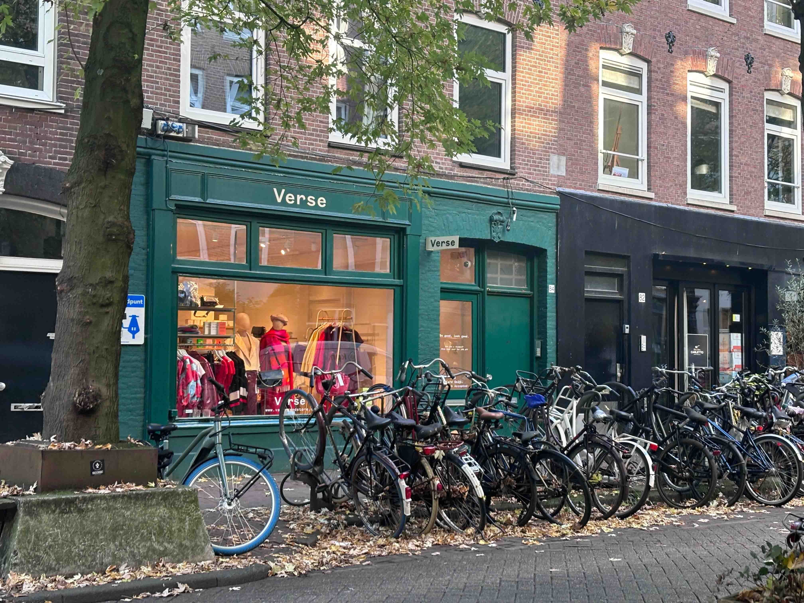

Brandmission
Is een duurzame kledingwinkel die zich al sinds de oprichting inzet voor eerlijke en milieuvriendelijke mode. Met een filiaal in Haarlem en een tweede locatie op de Haarlemmerstraat 36 in Amsterdam, biedt Brandmission een zorgvuldig geselecteerd assortiment van bekende duurzame merken zoals Armed Angels, Kuyichi en Veja. Klanten kunnen rekenen op een vriendelijke en behulpzame service, waardoor winkelen bij Brandmission niet alleen goed is voor het milieu, maar ook een aangename ervaring.
Eerlijk waar!
Is een kleine, sfeervolle winkel gelegen in een steegje vlakbij de Dam, op Torensteeg 5. Deze winkel heeft de grootste collectie van de duurzame merk Mud Jeans in Amsterdam en is trots om zich de officiële flagshipstore van dit duurzame jeansmerk te mogen noemen. Voor iedereen die in de stad op zoek is naar de perfecte jeans, is Eerlijk waar! dé plek om te bezoeken. Hier kun je rekenen op deskundig advies en een uitgebreide selectie van Mud Jeans, waardoor je gegarandeerd een model vindt dat perfect bij jou past.
Het Faire Oosten
Is een van de grootste duurzame winkels in Amsterdam, gevestigd aan de Waddenlaan 208. Deze winkel biedt een uitgebreid assortiment van diverse duurzame merken, variërend van kleding tot allerlei andere producten. Bij Het faire oosten kun je terecht voor een breed scala aan milieuvriendelijke en eerlijke artikelen, waardoor het een ideale bestemming is voor iedereen die bewuste keuzes wil maken bij het winkelen.
O My Bag
Richt zich op het maken van een positief verschil in de wereld door producenten in kleine gemeenschappen te verbinden met de wereldmarkt en eerlijke werkgelegenheid te creëren. Met een sterke focus op sociale impact in India en het verminderen van onze ecologische voetafdruk, streven we naar duurzame veranderingen. Onze Visie 2030 helpt ons de juiste prioriteiten te stellen om deze doelen te bereiken. Bezoek O My Bag op de Wolvenstraat 15.
Tally-Ho
Is een winkel gelegen op het Haarlemmerplein 23 in Amsterdam, met extra filialen in andere gemeenten zoals Bergen. Hoewel niet alle merken in hun assortiment duurzaam zijn, heeft Tally-ho recentelijk een systeem ingevoerd waarbij duurzame producten duidelijk gemarkeerd zijn met bruine labels. Dit maakt het gemakkelijker voor klanten om verantwoorde keuzes te maken, zelfs als ze de merken niet herkennen. De winkel biedt een ruime collectie en is een bezoek waard voor wie op zoek is naar zowel reguliere als duurzame mode.
VERSE
Werd opgericht door Ciara, geboren in Dublin, Ierland. Op 23-jarige leeftijd verhuisde ze naar Amsterdam en begon haar carrière in de corporate modewereld. Door haar ervaring bij een internationaal modebedrijf kreeg ze een scherp inzicht in de mode-industrie. Ciara zag een kans voor een winkel die niche, onafhankelijke en duurzame merken samenbrengt. Zo ontstond VERSE, een winkel die staat voor diversiteit, expressie, stijl, empowerment en moderne waarden.
